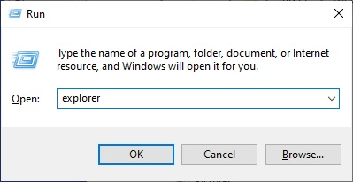
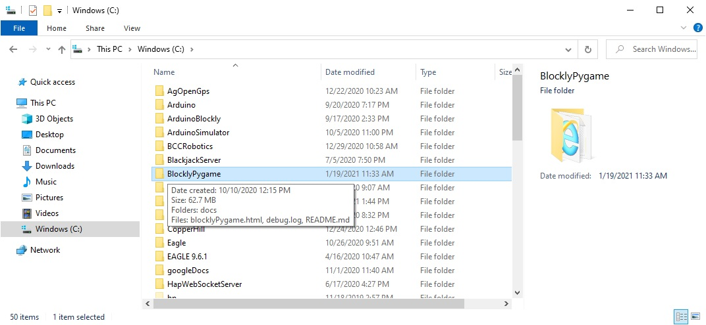
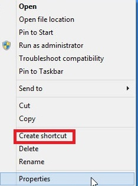
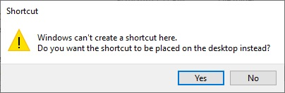
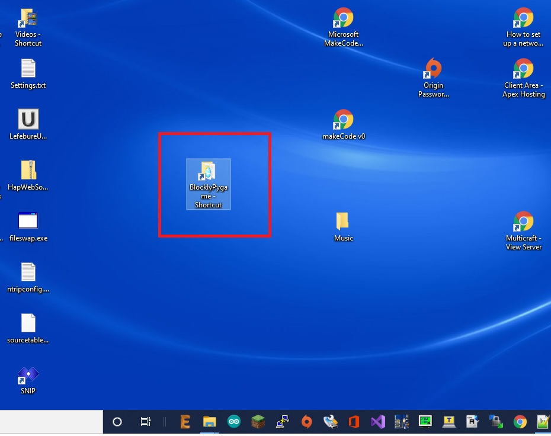

Locate the Windows key on your keyboard...It looks like this:
Hold the windows key down and press the r key
A window should pop up
In that window, enter the command: explorer:

Locate the BlocklyPyGame directory on the C: drive:

Right click on the C:\BlocklyPygame directory and select Create Shortcut:

Select yes to place the shortcut on the desktop:

Find the BlocklyPygame shortcut on your desktop
